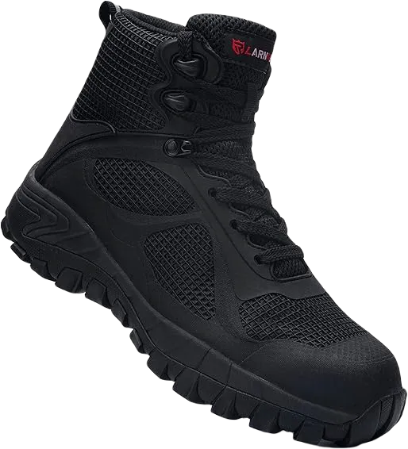
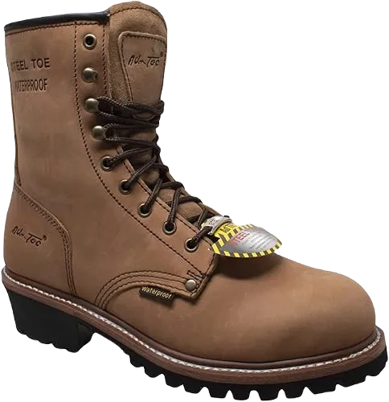
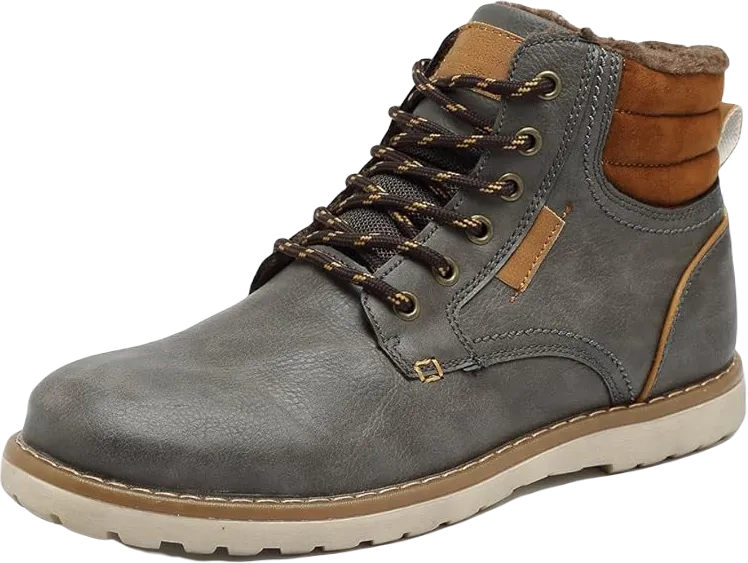

10 Best Diabetic Steel Toe Work Boots in 2024
It may be necessary to wear diabetic steel toe work boots for protection and well-being in various industries. Most warehouses, manufacturing facilities, and construction sites require steel toe work boots to prevent injuries.
However, metal toes can also cause injuries to your toes. The design of the metal toe is a significant factor when selecting the right work boot. It’s essential to ensure there is enough space in the toe area and that it is wide enough for comfort.
-
#1
LARNMERN metal Toe Protection Boots
You can improve your life by making positive changes in your lifestyle. Start wearing diabetic work boots to take better care of your toes, as these boots will handle that for you. Check out the LARNMERN steel toe shoes; I assure you won’t hesitate to choose them.
Let’s take a look at their impressive features. The semi-enclosed windproof tongue design prevents sand, dust, and rain from entering the shoe. This ensures your feet stay protected in various conditions.
The entire upper part of the shoe is made from leather and mesh, making it suitable for everyday use. Additionally, there are six extra metal eyelets for the laces, which enhance the shoe's stability and durability for both work and casual wear. -
#2
Sketcherspaintings Burgin-Tarmac
.webp)
In any case, these boots meet the criteria for the best work boots for diabetics. While they are not overly bulky or flashy, they maintain a sense of simplicity and style. Constructed from durable materials, they remain lightweight for everyday wear.
These will be the most comfortable boots you’ll ever own. So, go ahead, get them, and give your feet the comfort they deserve and need. The outsole can withstand significant impacts due to its steel toe, while its strong flex technology allows for foot flexibility while keeping the impact protection intact.
The adaptable cushioning is one of the best features for diabetics, providing secure footing and traction. The high collar enables you to work in challenging and wet conditions, protecting your lower legs from chafing. Additionally, the exterior has a superior dry layer that keeps your feet dry and comfortable. -
#3
Wooded area pro guys’ metal Toe Boots
Woodland vicinity boots are among the top 10 excellent steel toe work boots designed to provide exceptional comfort. Woodland offers various protective toe designs suitable for different work environments. One notable feature of these shoes is the antimicrobial protection, which prevents the growth of bacteria.
Metal-toe work boots provide a secure fit and protection against workplace hazards, such as falling objects and electrical risks. Their comfort suspension technology ensures all-day comfort while reducing foot fatigue. Additionally, these boots focus on providing arch support for added comfort.
The removable sock liner is treated with reliable antimicrobial properties to maintain a healthy environment for your feet. These boots also feature a slip-resistant outsole to help prevent accidents. The collar of the shoes is heavily cushioned, making them extremely comfortable to wear. -
#4
Irish Setter Men’s Diabetic Artwork Boots
.webp)
These boots meet all the criteria for the best work boots for diabetics. While they are not overly aggressive in design, they possess an elegance and sophistication. Constructed from durable materials, they remain lightweight, making them some of the most comfortable boots for individuals with diabetes. Get a pair and give your feet the comfort they deserve.
The outsole can withstand temperatures up to 475°F (246°C), protecting your feet from extreme heat while you work without worry. Its seamless flex technology allows for foot flexibility while maintaining impact protection. Those who engage in outdoor activities will appreciate these boots for their comfortable fit and excellent traction.
The cushioned collar helps prevent chafing on the lower legs, while the ultra-dry waterproof membrane keeps your feet dry and comfortable. These features combine to create a reliable and enjoyable wearing experience. -
#5
Sketchers Verdict Men’s Boots for Diabetics
.webp)
These therapeutic diabetic boots are likely the best option for diabetics, providing exceptional protection and comfort. Their spacious design offers ample room and conforms to the shape of your feet. The boots are slip-resistant, ensuring safety from falls. Skechers lower leg boots are your reliable companions in the daily struggle to keep your feet secure.
The leather upper is tough, durable, comfortable, and breathable. The drag outsole features grooves that provide excellent stability and grip, making these boots suitable for various surfaces.
These diabetic boots are designed with a cushioned collar and tongue to prevent discomfort and any pain in the soles. The breathable leather keeps your feet feeling fresh throughout the day, enhancing overall comfort. -
#6
Sketchers Chukka Brown Boots
.webp)
This diabetic work boot is designed to provide exceptional comfort. Its leather construction makes them durable and comfortable, while their spacious design allows your feet to move freely. The gel-infused insole offers personalized comfort, complemented by a shock-absorbing padded sole and flexible outsole.
The rubber traction outsole is highly flexible, providing stability on various surfaces. The padded soles are designed for shock absorption and cushioning, ensuring a comfortable experience throughout the day.
The adaptive padding insole conforms to the shape of your feet, providing optimal cushioning. Additionally, the vents on the sides allow for cooling and breathability. The cushioned collar offers support to your lower legs, reducing discomfort during various activities. -
#7
Dr. Solace Ranger men’s therapeutic Boots
.webp)
The Dr. Solace diabetic work boots are truly outstanding. They are durable and designed to meet all your outdoor needs while providing the comfort you require. Lightweight and comfortable, they won't cause discomfort while hiking or working.
The Dr. Solace boots feature leather uppers, and their gel-infused insoles provide comfort and pain relief. These boots represent the perfect combination of style and wellness, making them both easy to wear and incredibly comfortable. They are an excellent choice for people with diabetes.
Breathable leather keeps the work boots smelling fresh by regulating heat while keeping your feet cool. The leather lining enhances durability and reliability. Since they are slip-on, there’s no need for tying or loosening laces. Additionally, the footbeds are replaceable, allowing you to swap out the insoles for ones of your preference. The protective toe cap safeguards your toes from impacts or pressure. -
#8
Rockport typhoon Surge
.webp)
If you’re looking to buy the best work boots under $100, this pair is exactly what you need. Features like waterproof materials, seam sealing, and a shock-absorbing sole make them an excellent choice for diabetics. If you don’t want to compromise your well-being but still want to look stylish, these shoes are a fantastic option.
The Hydro-Guard technology includes waterproof leather and non-wicking laces to keep your feet dry and prevent foot problems. The cushioned collar and tongue provide protection against discomfort, while the shock-absorbing soles help reduce foot fatigue. This diabetic shoe will give you a solid foundation during your walks.
The flexibility and durability of the shoe support your movement, ensuring comfort and stability throughout your activities. With these boots, you can enjoy both style and function without sacrificing your health. -
#9
Rock rooster quick Dry
.webp)
If you’re diabetic and need to walk long distances, wearing the wrong shoes can cause irreparable damage to your feet. Consider these Stone Fowl shoes as a great option at a reasonable price. The steel toe will protect your feet and allow any existing injuries to heal properly.
These shoes are suitable for all seasons. During the colder months, the fiber offers insulation to keep your feet warm. In summer, the Cool Max technology keeps your feet dry and cool. Additionally, the PORON XRD material provides breathability, comfort, and durability.
The anti-static properties protect you from static electric shocks by dissipating static energy through the soles into the ground. Steel toe boots not only protect against injuries but also help prevent slipping, ensuring your safety while walking. -
#10
Propjet men’s snowstorm
The shoes feature a stylish combination of black and brown tones with a mid-zipper, offering a stunning appearance. They are designed to make your walks easy and comfortable while their waterproof capabilities keep your feet warm and dry.
The uppers are made from Scotch Guard leather, and the toe is constructed from rubber, providing both protection and comfort. While wearing these shoes, you won’t have to worry about harsh conditions that could impact your feet. This casual footwear is perfect for a variety of occasions.
The thiosulfate insulation offers warmth in extreme weather, even in the wettest and coldest conditions. The vaporized insoles provide additional insulation, retaining heat and keeping your feet warm during winter.